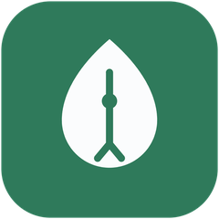
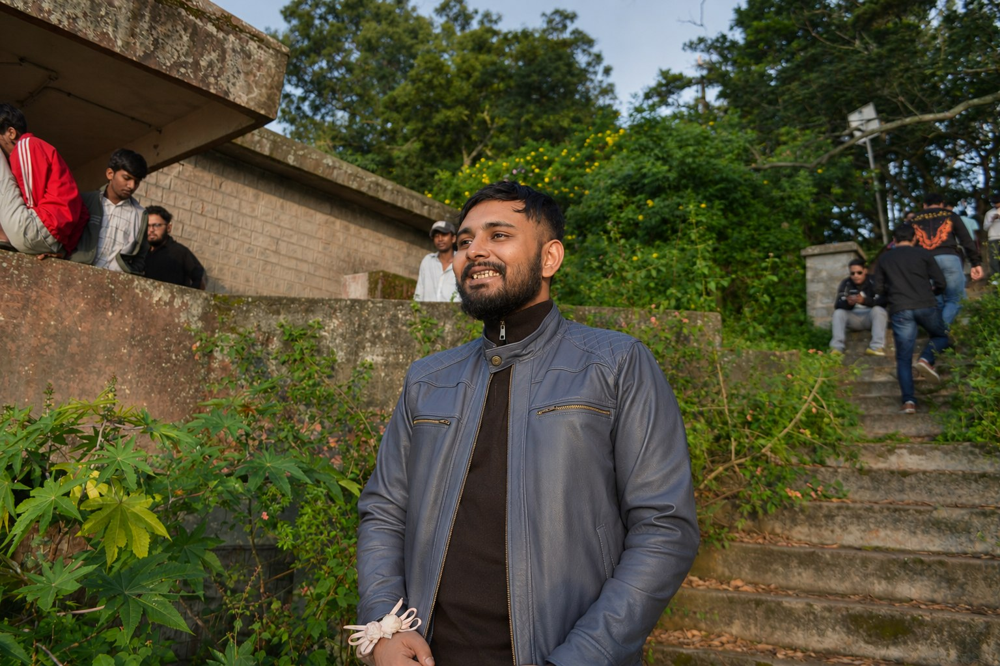
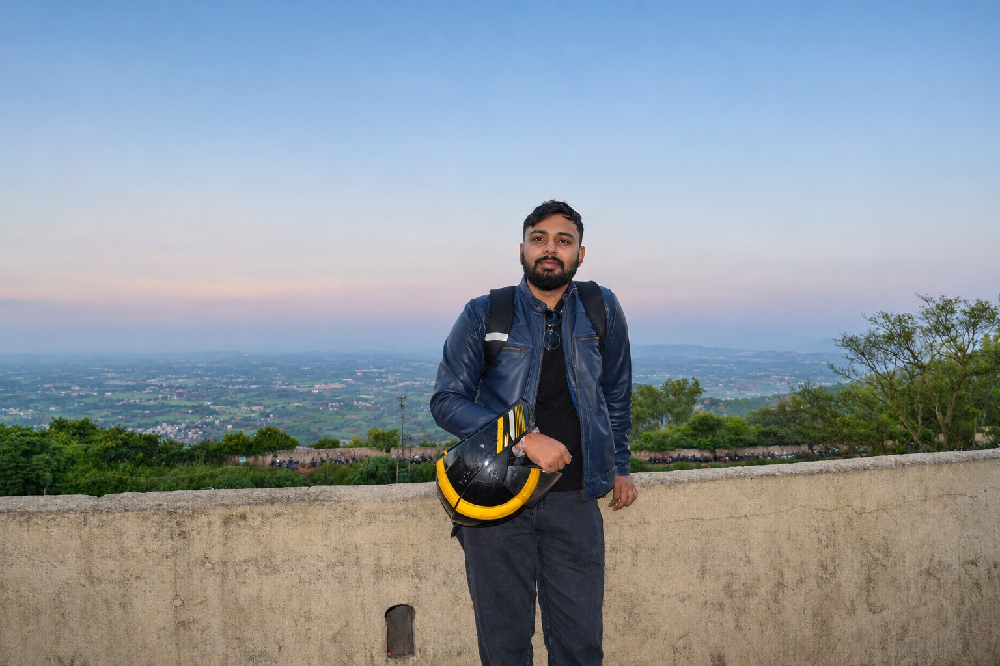

Institute of Hotel Management, Bhubaneswar
B.Sc. in Hospitality and Hotel Administration
01
CHEF · HOSPITALITY · SOFTWARE
I’m a chef first. I cook for people, and in my spare time I build software for them too. Both come down to care.
THE THREAD BETWEEN IT ALL
The kitchen taught me to notice the small things. Code gave me a way to fix some of them.
I’m Priyansh, a chef from Ranchi, trained at IHM Bhubaneswar. Most of my time goes into food: getting the seasoning right, plating with intent, and making sure the person at the table actually feels looked after.
Outside the kitchen I write software. It started as a hobby and turned into a habit, so now I build small tools I wish already existed, like a PDF editor that never uploads your files.
More about my story ↗B.Sc. in Hospitality and Hotel Administration
Hospitality Management, two-year specialisation · Italy
Things I’ve built after service hours. Different problems, same instinct: keep it simple and make it easier to use.

InkLeaf01 / DESKTOP SOFTWAREOPEN SOURCE ↗PDF EDITOR · TYPESCRIPT
A free, offline-first PDF editor for Windows, macOS and Linux. Your files stay on your device; no uploads, no accounts.
DISCORD · JAVASCRIPT
A Pokémon helper bot built to support players through their Discord adventures.
Side projects, client work and ideas that got far enough to show.
WEBSITE · ONLINE STORE
An online store for handloom sarees and Indian ethnic wear, with silks and brocades sourced straight from weavers in Varanasi and Kanchipuram.
DESKTOP APP · OPEN SOURCE
A free PDF editor that works entirely on your own computer. No accounts, no uploads, nothing leaves your device.
A few frames from days off. My best ideas usually turn up once I’m away from the stove and the screen.

FRAME 02 / 03
FRAME 03 / 03Ingredients, guests or code, it’s the small details that decide how something feels.
IN THE KITCHEN
Indian and Italian cooking, seasonal produce and the quiet work behind a plate that looks simple but isn’t.
AT THE DESK
Websites, desktop apps and the odd bot. I like the moment a rough idea finally turns into something that works.
OUT IN THE WORLD
Travel, photography, gaming, music and the unexpected conversations that make a place memorable.
A few dishes I keep coming back to, written so you can make them at home.
COURSE · CUISINE
One or two lines on the dish: where it comes from, what makes it worth cooking.
COURSE · CUISINE
One or two lines on the dish: where it comes from, what makes it worth cooking.
COURSE · CUISINE
One or two lines on the dish: where it comes from, what makes it worth cooking.
HAVE A PROJECT, AN IDEA OR A RECIPE?